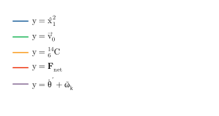

Importing a workbook (.xlsx, .xls or .ods) with numbers on more than one sheet asks which sheets to import. Each sheet shows its name and size, all start ticked, and the button counts what will come in ("Import all" when every sheet is ticked). Each sheet becomes its own line, named after the sheet. Sheets with only text on them aren't listed.
